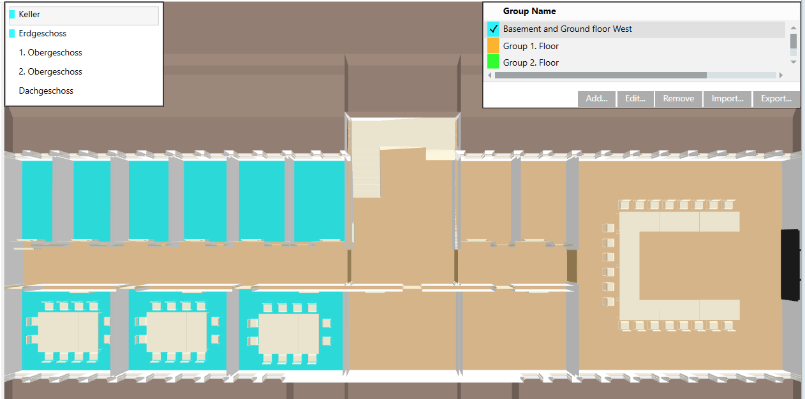
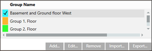
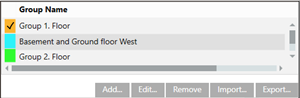
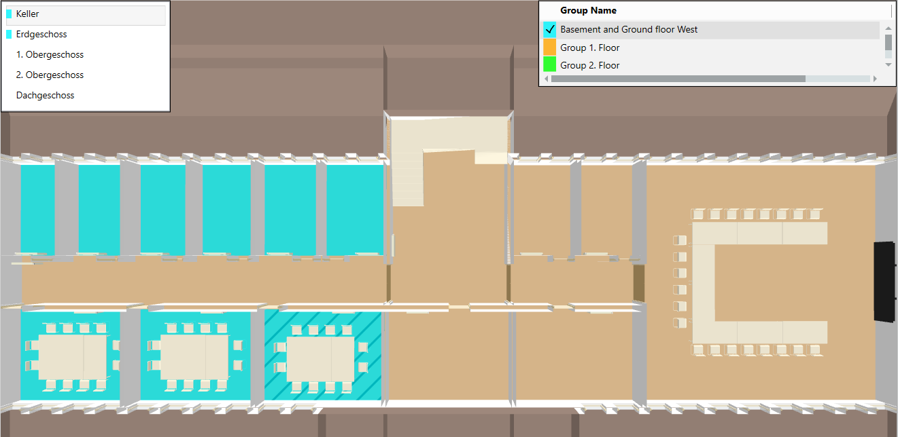
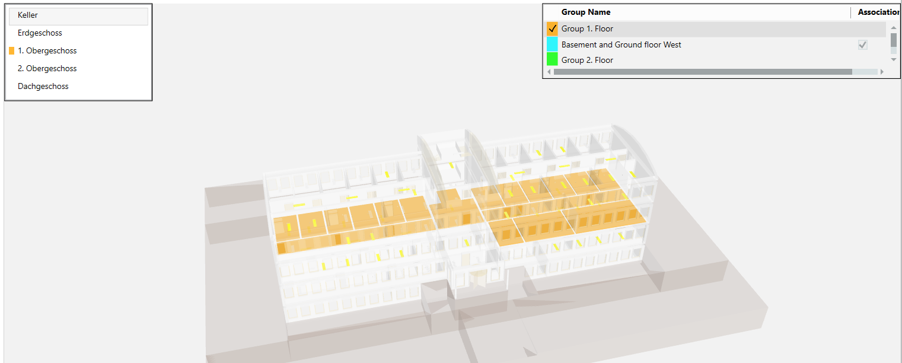

Display Room Groupings
Room groupings are useful for showing the dependencies between devices and rooms in a building. This is important, for example, to be able to notify users of a given room in advance of any maintenance work.
Display Grouping for a Specific Application
Scenario: You want to know which rooms belong to a plant (e.g. ventilation plant A).
- The BIM Viewer is open and in Operation mode.
- Click Show grouping
 .
. - In System Browser, select Logical View.
- Select the Manual Navigation check box.
- Select Logical > [Hierarchy] > [Ventilation plant].
- Double-click the desired ventilation plant.
- The graphic is opened in the BIM Viewer.

Display Rooms in a Group
Scenario: You want to notify users of scheduled maintenance work. As a consequence, you must know which rooms belong to a group.
- The BIM Viewer is open and in Operation Mode.
- Click Show grouping .
- The room grouping window displays in in the upper righthand corner.

- Click Show/hide floor list window
 . When shown, the floor list highlights groups in color that extend beyond one floor.
. When shown, the floor list highlights groups in color that extend beyond one floor.
- In the room grouping window, select the group.
- Select the floor in the floor list.
- The associated rooms are displayed in the corresponding color.
- (Optional) Select another floor in the floor list.
- Notify the room users.
Display Groupings for a Room
Scenario: You want to know the group to which a room belongs.
- The BIM Viewer is open and in Operation Mode.
- Click Show grouping .
- The room grouping window displays in in the upper righthand corner.

- Click Show/hide floor list window .
- Select the desired floor.
- Select the room from the floor plan.
- The selected room is shaded.

- The group is highlighted in the room grouping window. All groups are highlighted when a room is assigned to more than one group. The associated groups are listed at the top.

Display Room Grouping in X-Ray View
- Click Home
 .
. - Click Show/hide filter
 .
. - Click X-ray view
 .
.